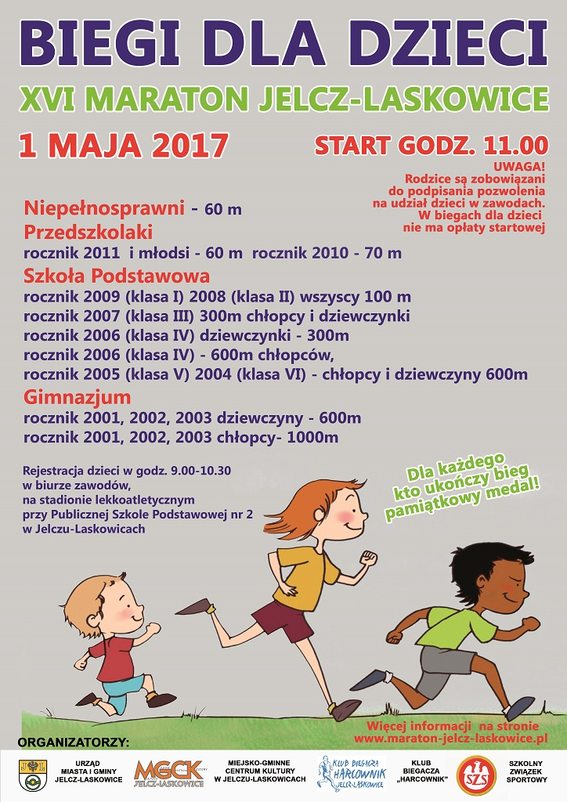
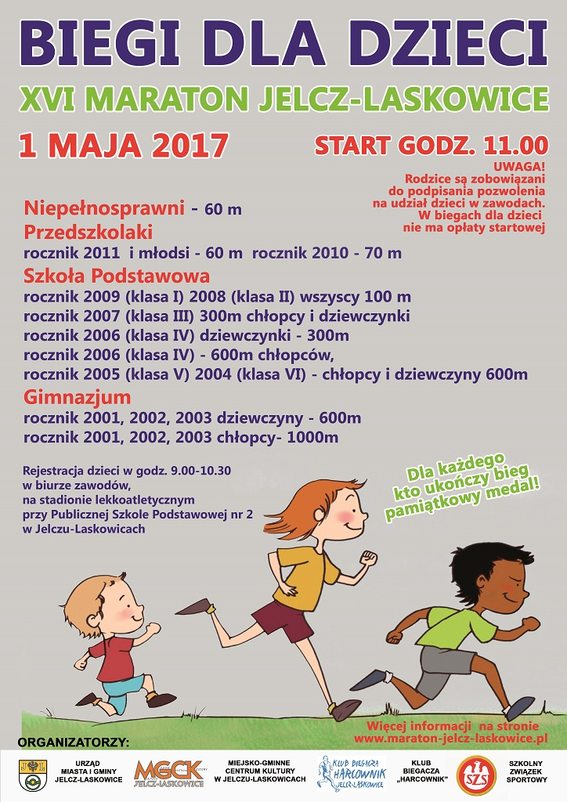

Informacje organizacyjne: Biuro Zawodów mie¶ci siê w Publicznej Szkole Podstawowej nr 2 w Jelczu-Laskowicach, Aleja M³odych 1. Spójrz na mapê. Weryfikacja zg³oszeñ, wydawanie numerów i pakietów startowych oraz dodatkowe zapisy odbêd± siê: w dniu 30.04.2017 w godz. 17:00 - 20:00 i w dniu 01.05.2017 w godz: 7:00 - 8:30. Organizator dopuszcza odbiór numeru startowego i pakietu w imieniu uczestnika przez osobê przez niego upowa¿nion± -– wymagany jest wydrukowany i podpisany formularz. Posi³ek dla biegaczy wydawany bêdzie w sto³ówce, w budynku Biura Zawodów. Punkty ¿ywieniowe oraz napoje na trasie: start / meta, Mi³oszyce (ok. 5,5 km ka¿dej pêtli), ul. Witosa (ok. 9.5 km ka¿dej pêtli). Toalety dla biegaczy dostêpne bêd± przy starcie / mecie oraz w Mi³oszycach (ok. 5,5 km ka¿dej pêtli). Spójrz na mapê. Dekoracja i losowanie nagród: 10,5 km (bieg + NW) - 11:00. Pó³maraton - 13:00. Maraton - 15:00. P³ywalnia miejska w Jelczu-Laskowicach (ul. Basenowa 5) - mo¿liwo¶æ bezp³atnego skorzystania za okazaniem numeru startowego w godz. 11:00 - 20:00. Masa¿e po biegu - w okolicach mety w godz. 11:00 - 15:00. Noclegi w budynku szko³y - Biura Zawodów. Osoby zainteresowane powinny dysponowaæ w³asnym ¶piworem, karimat±. Biegi dla dzieci odbywaæ siê bêd± na terenach sportowych Publicznej Szko³y Podstawowej nr 2 w Jelczu-Laskowicach, Aleja M³odych 1. Rejestracja dzieci w godz. 9:00 - 10:30 na stadionie lekkoatletycznym przy szkole. Starty od godz. 11:00, roczniki i trasy - zobacz plakat. Wyjazd na cmentarz w Czernicy i z³o¿enie kwiatów oraz medalu na grobie Barbary Szlachetki - sobota, godz. 20:00. W dniu imprezy od godz. 10:00 do 14:00 uczestnicy biegów i rodziny bêd± mog³y zrobiæ sobie pami±tkowe zdjêcie w Fotobudce. Zdjêcia bêd± darmowe, drukowane na miejscu przez firmê Fotobudka Keep Smiling  
|